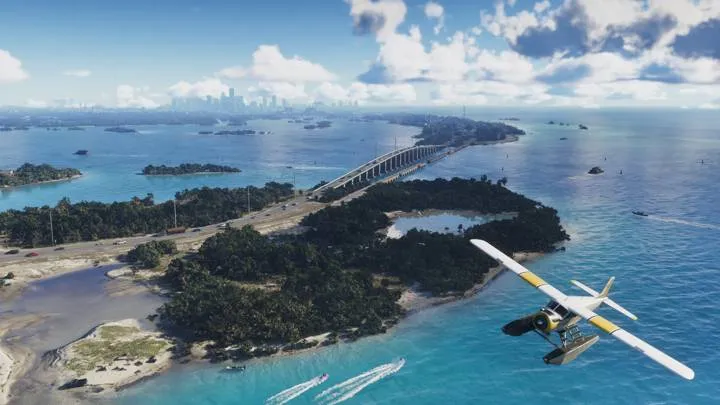
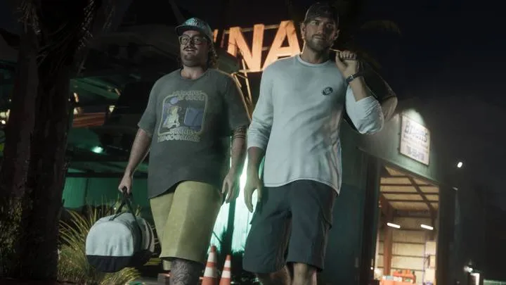

Опубликовано:
Первая глава проходит на островах Leonida Keys — в округе Мариана, вокруг острова Ки-Ленто. Джейсон работает «решалой» у Брайана Хедера: собирает аренду с его жильцов и помогает с контрабандой вместе с Кэлом и пилотом Донни. Лусия в начале главы сидит в тюрьме; играть за неё постоянно можно после миссии Coming Home.
После Gone Fishing миссии 3–6 (Gear Up, Lab Fees, Just a Scratch, Unwanted Attention) открываются одновременно, и их можно проходить в любом порядке. Pipework открывается, когда пройдены все четыре.
Все миссии главы 1
| № | Миссия | За кого | О чём |
|---|---|---|---|
| 1 | Prologue ✓ | Лусия | Лусия на приёме у тюремного консультанта. |
| 2 | Gone Fishing ✓ | Джейсон | Джейсон и Донни везут контрабанду. |
| 3 | Gear Up ✓ | Джейсон | Джейсон покупает «длинноствол» — дробовик или винтовку. |
| 4 | Just A Scratch ✓ | Джейсон | Джейсон чинит свой Ganado. |
| 5 | Lab Fees ✓ | Джейсон | Джейсон собирает арендную плату. |
| 6 | Unwanted Attention ✓ | Джейсон | Кэл и Джейсон едут в Хэмлет. |
| 7 | Pipework ✓ | Джейсон | Джейсон чинит сантехнику у жильца. |
| 8 | Hey Arnold! ✓ | Джейсон | Брайан, Джейсон и Кэл ищут посредника. |
| 9 | Island Dreams ✓ | Джейсон | Джейсон ныряет за сокровищами. |
| 10 | Feng Shui ✓ | Джейсон | Джейсон и Кэл переставляют мебель. |
| 11 | Coming Home ✓ | Лусия | Лусия выходит на свободу. |
| 12 | Buck Me ✓ | Джейсон и Лусия | Джейсон и Лусия открывают счёт в банке. |
| 13 | Clean Up After Donnie ✓ | Джейсон | Джейсон забирает потерянный груз. |
| 14 | Down to Earth | Джейсон и Лусия | Джейсон и Лусия берутся за контрабанду. |
| 15 | Clear Skies | Джейсон | Джейсон и Донни едут к байкерам. |
| 16 | Day Release | Джейсон и Лусия | Маттиа, Джейсон и Лусия гуляют вечером. |
| 17 | Swamped | Джейсон | Джейсон, Брайан и Лорри встречаются с бандой Kingfishers. |
| 18 | скрыто — спойлер | — | Описание скрыто, чтобы не раскрывать сюжет. |
| 19 | Recalibration | Джейсон и Лусия | Джейсон и Лусия проводят время с Кэлом. |
| 20 | Tourist Trap | Джейсон и Лусия | Заказ: забрать груз. |
| 21 | Home Sweet Home | Лусия | Лусия возвращается домой. |
| 22 | Discharge Time | Лусия | Лусия навещает Джейсона. |
✓ — готово подробное прохождение. Три миссии с сюжетными спойлерами в названии мы скрыли. Остальные прохождения добавляем каждый день.
Готовые прохождения







Частые вопросы
Сколько миссий в главе 1 GTA 6?
22 миссии сюжета по списку PC Gamer.
Где проходит глава 1?
В основном — Leonida Keys.
Источники: PC Gamer, «GTA 6 mission list: All chapters and missions», 19.11.2026; Push Square, «GTA 6: Chapters & Story Missions», 19.11.2026; GTABase, «GTA 6 100% Completion Guide», 19.11.2026. Названия — как в английской версии игры.